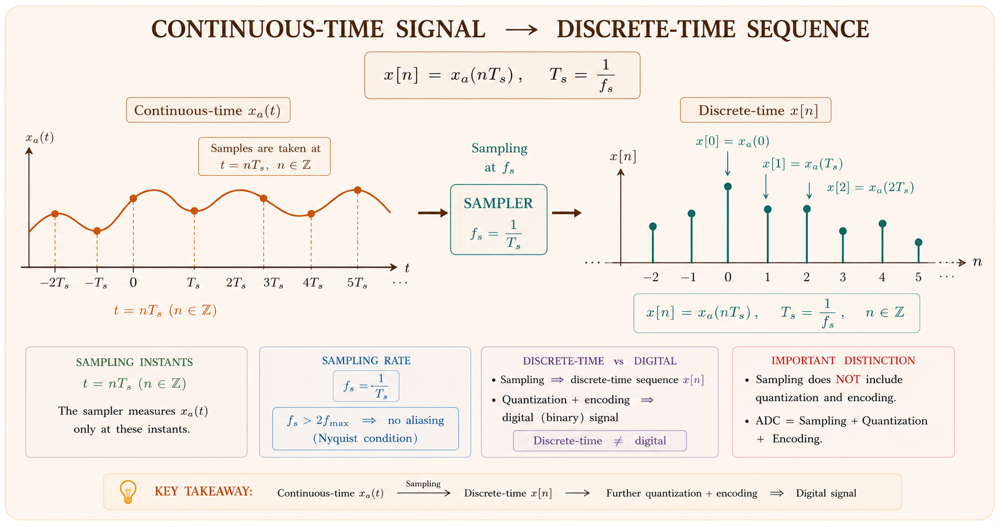
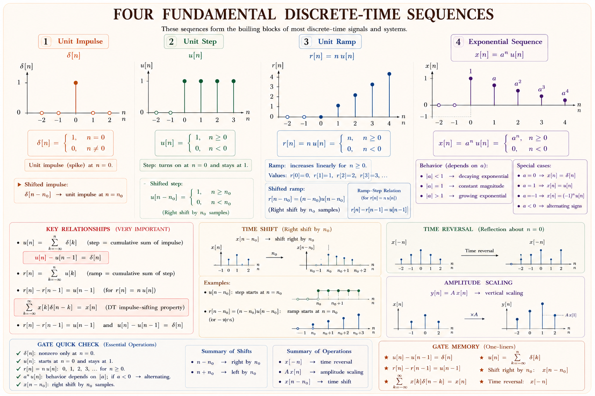
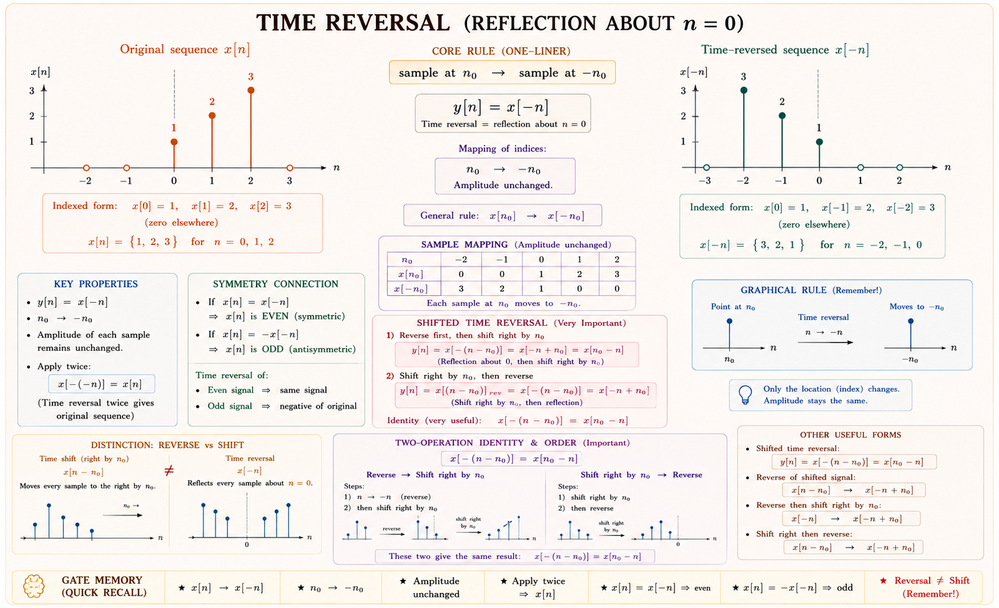
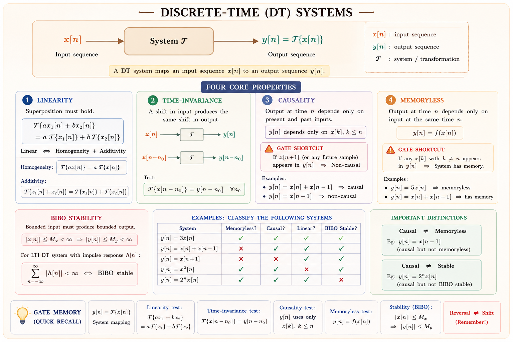
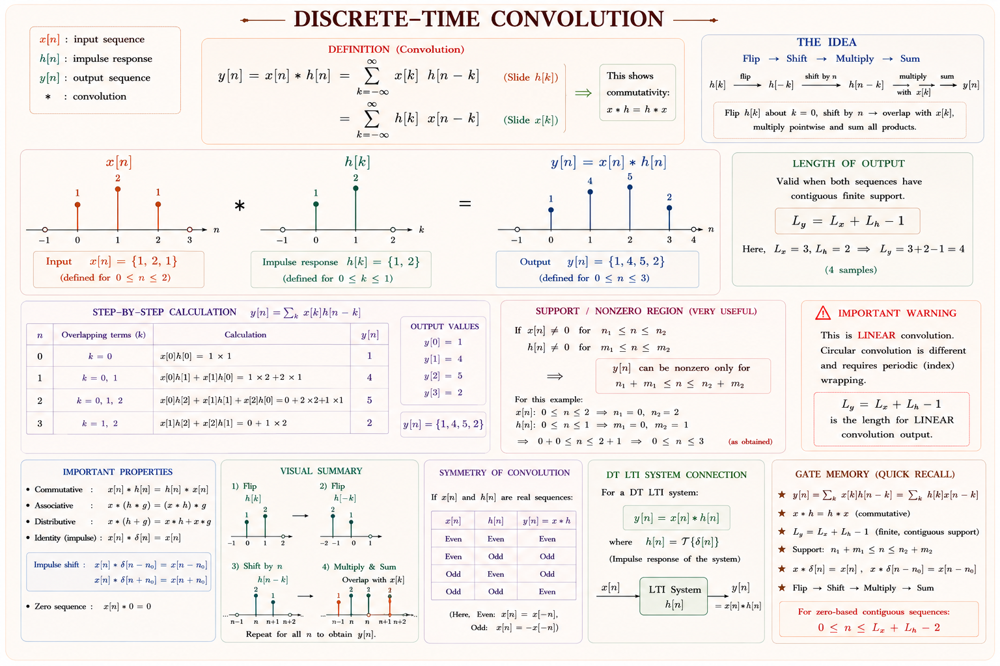
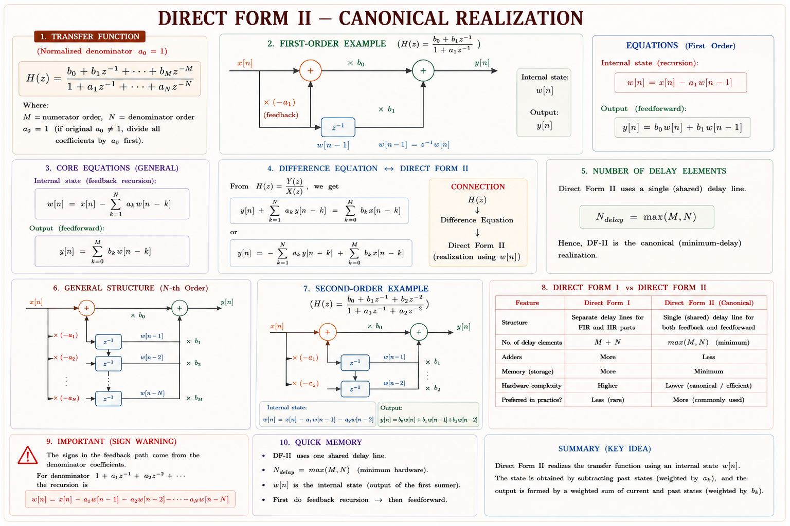

From sampling a microphone to running a digital filter in your phone, every modern signal processing pipeline works in discrete time. This chapter builds the complete mathematical framework — sequences, operations, system properties, convolution, and difference equations — that underpins DSP, communications, and control.
Every physical signal in nature — sound, temperature, voltage — is continuous in time. Yet almost every modern system that processes signals — your smartphone, a radar receiver, an MRI scanner — works digitally on sequences of numbers. Why? Because digital processing is programmable, precise, and immune to component tolerances.
A discrete-time signal is what you get when you measure a continuous signal at equally spaced time instants and store those measurements as a list of numbers. The signal no longer has meaning "between" samples — it only exists at integer multiples of the sampling period \(T_s\).
Consider recording your voice. The microphone produces a continuous voltage \(x_a(t)\). An analogue-to-digital converter (ADC) measures this voltage at every \(T_s = 1/f_s\) seconds, producing the sequence \(x[n] = x_a(nT_s)\). The integer index \(n\) replaces continuous time \(t\). Once in discrete form, the signal can be stored, compressed, filtered, and transmitted entirely as arithmetic on numbers.[1]

Discrete-time theory applies to any sequence of numbers — stock prices indexed by trading day, DNA base pairs indexed by position, pixels indexed along a row. The word "time" is used by convention; the independent variable \(n\) need not represent physical time.
Discrete-time signals feed directly into the Z-transform (Chapter 9), the Discrete Fourier Transform (Chapter 10), and Digital Filter Design (Chapter 11). Master this chapter first; those chapters become straightforward extensions.
A discrete-time signal \(x[n]\) is a function defined only for integer values of \(n\). We write it as a sequence: \(\{x[n]\} = \{\ldots, x[-2], x[-1], x[0], x[1], x[2], \ldots\}\). The value \(x[n]\) is called the \(n\)-th sample.[1]
Use square brackets \(x[n]\) for discrete-time signals and parentheses \(x(t)\) for continuous-time signals. Mixing them in a GATE answer costs marks.
These building blocks appear throughout the subject. Know them cold.
Definition:
Think of it as a single spike of height 1 at \(n=0\) and zero everywhere else. It is the DT counterpart of the Dirac delta, but unlike the continuous version, \(\delta[n]\) is a perfectly ordinary number (it equals 1). Any signal can be written as a weighted sum of shifted impulses: \(x[n] = \sum_{k=-\infty}^{\infty} x[k]\,\delta[n-k]\). This is the sifting property and it is the foundation of convolution.[2]
\(u[n]\) switches on at \(n=0\) and stays on. Relationship with impulse: \(\delta[n] = u[n] - u[n-1]\) and \(u[n] = \sum_{k=0}^{\infty}\delta[n-k]\). These two relations are tested repeatedly in GATE.
When \(|a| < 1\): sequence decays to zero (stable). When \(|a|> 1\): sequence grows without bound (unstable). When \(a < 0\): sequence alternates in sign. This is the most important family for studying DT system stability.
The DT complex exponential is periodic with period \(N\) if and only if \(\omega_0 / (2\pi)\) is a rational number. This is a key difference from the continuous case, where \(e^{j\omega_0 t}\) is always periodic. Here, \(\omega_0\) is the digital frequency in radians/sample, not radians/second.[1]

Understanding how sequences are manipulated is essential before studying systems. All DT system operations reduce to combinations of these elementary operations.
| Operation | Mathematical Form | Effect on \(x[n]\) | GATE Tip |
|---|---|---|---|
| Time Shift (Delay) | \(y[n] = x[n-k]\) | Shifts sequence right by \(k\) samples | k>0 → delay; k<0 → advance |
| Time Reversal | \(y[n] = x[-n]\) | Folds sequence about \(n=0\) | Flip first, then shift — order matters! |
| Amplitude Scaling | \(y[n] = A \cdot x[n]\) | Multiplies each sample by \(A\) | Straightforward; watch sign of \(A\) |
| Addition | \(y[n] = x_1[n]+x_2[n]\) | Sample-by-sample addition | Signals must be defined over same \(n\) range |
| Multiplication | \(y[n] = x_1[n]\cdot x_2[n]\) | Sample-by-sample product | Used in windowing, modulation |
| Downsampling | \(y[n] = x[Mn]\) | Keeps 1 in every \(M\) samples | Can alias if \(f_s/M < 2f_{max}\) |
| Upsampling | \(y[n] = x[n/L]\) if \(L|n\), else 0 | Inserts \(L-1\) zeros between samples | Followed by LPF to interpolate |
Time reversal folds the sequence about \(n = 0\). If \(x[n] = \{1, 2, 3\}\) (for \(n = 0, 1, 2\)), then \(x[-n] = \{3, 2, 1\}\) (for \(n = -2, -1, 0\)). A shifted-and-reversed sequence: \(y[n] = x[k-n]\) means first reverse (replace \(n\) by \(-n\)) to get \(x[-n]\), then shift right by \(k\) (replace \(n\) by \(n-k\)) to get \(x[-(n-k)] = x[k-n]\).[2]
To find \(x[k-n]\): the correct sequence is (1) reverse: \(x[-n]\), then (2) shift right by \(k\). Students who shift first and then reverse get the wrong result. GATE 2019 EC tested exactly this.

A DT signal \(x[n]\) is periodic with period \(N\) (where \(N\) is a positive integer) if \(x[n+N] = x[n]\) for all \(n\). For the complex exponential \(e^{j\omega_0 n}\), this requires \(e^{j\omega_0(n+N)} = e^{j\omega_0 n}\), i.e., \(e^{j\omega_0 N} = 1\), which means \(\omega_0 N = 2\pi k\) for some integer \(k\).[1]
In continuous time, \(e^{j\omega_0 t}\) is always periodic. In discrete time, \(e^{j\omega_0 n}\) is periodic only if \(\omega_0/(2\pi)\) is rational. If \(\omega_0 = 1\) rad/sample (so \(\omega_0/2\pi = 1/2\pi\), irrational), the DT exponential is not periodic.
If \(x_1[n]\) has period \(N_1\) and \(x_2[n]\) has period \(N_2\), then \(x_1[n]+x_2[n]\) has period \(N = \text{lcm}(N_1, N_2)\). This differs from continuous time where the period is \(\text{lcm}(T_1, T_2)\) provided the ratio \(T_1/T_2\) is rational.
A DT system maps an input sequence \(x[n]\) to an output sequence \(y[n]\). We write \(y[n] = \mathcal{T}\{x[n]\}\). Five key properties characterize DT systems — every GATE paper tests at least two of them.

A system is linear if it satisfies both homogeneity (scaling) and superposition (additivity):
Test method: If the system equation contains any constant bias (e.g., \(y[n]=x[n]+5\)) or if the output depends nonlinearly on the input (e.g., \(y[n]=x^2[n]\)), the system is nonlinear. The zero-input must produce zero output for a linear system.
Test method: Delay the input by \(k\) to get \(x[n-k]\) and compute the output. Separately delay the output \(y[n]\) by \(k\). If both are identical, the system is time-invariant. Systems with time-varying coefficients like \(y[n] = n\cdot x[n]\) are time-varying (the multiplier \(n\) changes with time).[2]
A system is causal if the output at any time \(n_0\) depends only on input values at \(n \leq n_0\) — i.e., present and past inputs only. In terms of the impulse response \(h[n]\): a system is causal if and only if \(h[n] = 0\) for \(n < 0\). [1]
A causal system cannot "look into the future." A real-time audio filter must be causal. An offline image-processing filter can be non-causal because the entire image is already available.
A system is BIBO stable (Bounded-Input Bounded-Output) if every bounded input produces a bounded output. For an LTI system, the necessary and sufficient condition is absolute summability of the impulse response:[1]
Equivalently, in the Z-domain: the region of convergence (ROC) of \(H(z)\) must include the unit circle \(|z|=1\).
A system is memoryless if \(y[n]\) depends only on \(x[n]\) (current input only). Example: \(y[n] = 3x[n]\) is memoryless; \(y[n] = x[n-1]\) is not (it has one unit of memory — a delay). A system is invertible if distinct inputs always produce distinct outputs, so that the system can be "undone."
| Property | Test / Condition | Counterexample (fails) |
|---|---|---|
| Linear | \(\mathcal{T}\{ax_1+bx_2\}=a\mathcal{T}\{x_1\}+b\mathcal{T}\{x_2\}\) | \(y[n]=x^2[n]\), \(y[n]=x[n]+1\) |
| Time-Invariant | \(x[n-k]\to y[n-k]\) for all \(k\) | \(y[n]=nx[n]\), \(y[n]=x[2n]\) |
| Causal | \(h[n]=0\) for \(n<0\)< /td> | \(y[n]=x[n+1]\) (uses future) |
| BIBO Stable | \(\sum|h[n]|<\infty\)< /td> | \(y[n]=\sum_{k=0}^{n}x[k]\) (accumulator, unstable) |
| Memoryless | \(y[n]\) depends only on \(x[n]\) | \(y[n]=x[n-1]\) (has memory) |
Convolution is the single most important operation in this chapter. For any LTI system, if the input is \(x[n]\) and the impulse response is \(h[n]\), then the output is their convolution:[1]
Think of it as: "The output at time \(n\) is the weighted sum of all past (and present) inputs, where the weights come from the impulse response." Each input sample \(x[k]\) produces a scaled and shifted copy of \(h[n]\) at the output; the total output is the sum of all these copies.
| Property | Formula | Significance |
|---|---|---|
| Commutative | \(x * h = h * x\) | Input and impulse response can be swapped |
| Associative | \((x*h_1)*h_2 = x*(h_1*h_2)\) | Cascaded systems merge into one |
| Distributive | \(x*(h_1+h_2) = x*h_1 + x*h_2\) | Parallel systems add their impulse responses |
| Shift property | \(x[n-k]*h[n] = y[n-k]\) | Shifting input shifts output |
| Identity | \(x[n]*\delta[n] = x[n]\) | \(\delta[n]\) is identity for convolution |
| Length | \(\text{len}=N_1+N_2-1\) | For finite sequences of lengths \(N_1, N_2\) |
This is the method examiners expect in manual calculations:

Represent each sequence as a polynomial in \(z^{-1}\): \(X(z^{-1}) = 1 + 2z^{-1} + z^{-2}\) and \(H(z^{-1}) = 1 + 2z^{-1}\). Multiply the polynomials: \((1+2z^{-1}+z^{-2})(1+2z^{-1}) = 1 + 4z^{-1} + 5z^{-2} + 2z^{-3}\), giving \(y[n]=\{1,4,5,2\}\). This is much faster for GATE numericals.[3]
For sequences of length ≤4, use the polynomial multiplication method. Write each sequence as coefficients, multiply just like polynomials (FOIL method), and read off the convolution. This takes under 60 seconds and eliminates arithmetic errors.
Just as differential equations describe continuous-time LTI systems, linear constant-coefficient difference equations (LCCDEs) describe discrete-time LTI systems. The general form is:[2]
With \(a_0 = 1\) (normalized form), this becomes: \(y[n] = -\sum_{k=1}^{N} a_k y[n-k] + \sum_{k=0}^{M} b_k x[n-k]\). This is directly implementable as a digital filter: compute present output from past outputs and past/present inputs.
A difference equation can be implemented in hardware or software using three building blocks: delay elements (\(z^{-1}\)), multipliers, and adders. The two standard structures are Direct Form I and Direct Form II (canonical).

Set \(x[n] = \delta[n]\) and assume zero initial conditions. Solve recursively:
For \(y[n] - \tfrac{1}{2} y[n-1] = x[n]\) with \(x[n]=\delta[n]\) and \(y[n]=0\) for \(n<0\):
Since \(\sum_{n=0}^{\infty}|\tfrac{1}{2}|^n = 1/(1-\tfrac{1}{2}) = 2 < \infty\), this system is stable.
Taking the Z-transform of the LCCDE (with zero initial conditions) gives the transfer function:[3]
Question: Determine if \(y[n] = x[2n]\) is time-invariant.
Solution:
Method: delay input by \(k\) → output = \(x[2n-k]\). But delaying output by \(k\) → \(y[n-k] = x[2(n-k)] = x[2n-2k]\). These are not equal for arbitrary \(k\) (e.g., \(k=1\): \(x[2n-1] \neq x[2n-2]\)). Hence time-varying. Systems that compress or expand the time axis (\(x[Mn]\), \(x[n/M]\)) are always time-varying.
Question: Find \(y[n] = x[n]*h[n]\) for \(x[n]=\{1,2,3\}\) (starting at \(n=0\)) and \(h[n]=\{1,1,1\}\) (starting at \(n=0\)).
Solution (Polynomial method):
\((1+2z^{-1}+3z^{-2})(1+z^{-1}+z^{-2}) = 1+3z^{-1}+6z^{-2}+5z^{-3}+3z^{-4}\)
∴ \(y[n] = \{1,3,6,5,3\}\), length = \(3+3-1=5\). ✓
Question: Show the accumulator is BIBO unstable.
Solution: Impulse response \(h[n] = u[n]\). Then \(\sum_{n=0}^{\infty}|h[n]| = \sum_{n=0}^{\infty}1 = \infty\). Not absolutely summable ∴ BIBO unstable. Even with bounded input \(x[n]=u[n]\), output \(y[n] = (n+1)u[n]\) grows without bound.
Question: Find the fundamental period of \(x[n] = \cos(0.2\pi n)\).
Solution: \(\omega_0 = 0.2\pi\). Condition: \(\omega_0 N = 2\pi k\) → \(0.2\pi N = 2\pi k\) → \(N = 10k\). Smallest positive integer \(N\) is \(N=10\) (with \(k=1\)). Fundamental period = 10 samples.
Question: For \(H(z) = \frac{1}{1-0.5z^{-1}}\), determine causality and stability.
Solution: Pole at \(z=0.5\). For a causal system, ROC is \(|z|>0.5\). This ROC includes the unit circle \(|z|=1\). ∴ System is both causal and stable. Impulse response: \(h[n]=(0.5)^n u[n]\) — right-sided (causal), decays to zero (stable).
Since \(E\) is finite, \(x[n]\) is an energy signal with \(P = 0\).
Linearity: Check \(\mathcal{T}\{ax_1+bx_2\} = (ax_1[n]+bx_2[n])(ax_1[n-1]+bx_2[n-1])\). This contains cross-terms (\(ab \cdot x_1[n]x_2[n-1]\)) that do not appear in \(a\mathcal{T}\{x_1\}+b\mathcal{T}\{x_2\}\). ∴ Nonlinear.
Time-invariance: Input delayed: \(y_1[n] = x[n-k]\cdot x[n-k-1]\). Output delayed: \(y[n-k] = x[n-k]\cdot x[n-k-1]\). These are equal ∴ Time-invariant.
Causality: \(y[n]\) depends on \(x[n]\) and \(x[n-1]\) only — present and one past sample. ∴ Causal.
Stability: If \(|x[n]| \leq B\), then \(|y[n]| = |x[n]||x[n-1]| \leq B^2 < \infty\). ∴ BIBO stable.
Nonlinear, time-invariant, causal, stable. This type of mixed-property question appears often in GATE EC.
Using the Z-transform: \(X(z) = \frac{1}{1-az^{-1}}\), \(H(z) = \frac{1}{1-bz^{-1}}\)
Partial fraction decomposition:
This is a standard result worth memorising. For \(a=b\): \(y[n] = (n+1)a^n u[n]\).
Writing \(x(n)\) instead of \(x[n]\) for a DT signal. In GATE answers, wrong brackets signal conceptual confusion and can cost you a mark in descriptive questions.
Students often conclude \(y[n] = nx[n]\) is time-invariant because "the formula looks simple." It is time-varying because the coefficient \(n\) changes with time. Always perform the formal delay test, don't guess by inspection.
\(y[n] = \sum_{k=-\infty}^{n}x[k]\) is the most common "looks stable but isn't" trap. Its impulse response is \(u[n]\), whose sum diverges. Never assume integrators/accumulators are stable.
Students often forget the output length formula. For \(N_1\)-length and \(N_2\)-length sequences convolved, the output has length \(N_1 + N_2 - 1\). A classic GATE trap: choosing an answer with length \(N_1 + N_2\).
\(e^{j\omega_0 n}\) is NOT always periodic in DT (only when \(\omega_0/2\pi\) is rational). Students apply the CT rule "always periodic" and get wrong answers on period questions.
Many students assume a causal system is automatically stable. The accumulator \(y[n]=\sum_{k\leq n}x[k]\) is causal (h[n]=u[n]=0 for n<0 ✓) but unstable. Causality and stability are independent properties.
Imagine a causal security guard who only reports on past events (no future leaks). He is linear — two complaints get double the response. He is time-invariant — same rule today and tomorrow. He is stable — a loud alarm produces a loud but finite response. A system passing all four tests is a causal LTI stable system — the gold standard for practical digital filters.
| Topic | GATE Probability | Key Formula / Test |
|---|---|---|
| DT Convolution | 🟢 Very High | \(y[n]=\sum_k x[k]h[n-k]\), length \(N_1+N_2-1\) |
| Stability (BIBO) | 🟢 Very High | \(\sum|h[n]|<\infty\) ↔ stable; poles inside unit circle |
| Causality | 🟢 High | \(h[n]=0\) for \(n<0\) |
| Linearity Test | 🟢 High | Superposition; bias or squaring → nonlinear |
| Time-Invariance | 🟢 High | Variable coefficient → TV; downsampling → TV |
| DT Periodicity | 🟡 Medium | \(\omega_0/2\pi\) rational → periodic; period \(N\) |
| Difference Equations | 🟡 Medium | Recursive solve; Z-transform for \(H(z)\) |
| Energy/Power | 🟡 Medium | \(E=\sum|x[n]|^2\); periodic → power signal |
| System Realization | 🔴 Low | Direct Form I, II; delay elements count |
\(\delta[n]\): spike at 0. \(u[n]\): on for \(n\geq0\). \(\delta[n]=u[n]-u[n-1]\). \(u[n]=\sum_k\delta[n-k]\). Exponential \(a^nu[n]\): decays if \(|a|<1\).
Causal: \(h[n]=0,n<0\). Stable: \(\sum|h[n]|<\infty\). Linear: superposition. Time-invariant: no time-varying coefficients.
\(y[n]=x[n]*h[n]=\sum_k x[k]h[n-k]\). Commutative, associative, distributive. Output length: \(N_1+N_2-1\). Shift: \(x[n-k]*h[n]=y[n-k]\).
\(\sum a_k y[n-k]=\sum b_k x[n-k]\). Set \(x[n]=\delta[n]\) to find \(h[n]\). Z-transform gives \(H(z)=B(z)/A(z)\).
DT periodic iff \(\omega_0/2\pi\) rational. Period \(N\): smallest positive integer with \(\omega_0 N=2\pi k\). Sum: period = lcm(\(N_1,N_2\)).
Energy: \(E=\sum|x[n]|^2\). Finite \(E\) → energy signal (\(P=0\)). Infinite \(E\), finite \(P\) → power signal. Finite-length → energy. Periodic → power.
Stuck on a concept? Ask about DT systems, convolution, or any GATE question below.
Z-Transform — definition, ROC, common pairs, inverse Z-transform (partial fractions, power series), properties (shifting, convolution, time reversal, differentiation), initial and final value theorems, and unilateral Z-transform for systems with initial conditions. The chapter that unifies everything in this chapter.
All technical content is derived from the following standard textbooks. All explanations, derivations, diagrams, and examples are original to Aarova AI.